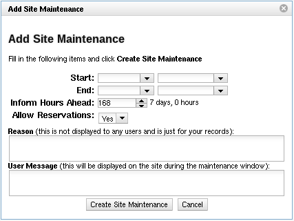

VCL provides a way for scheduling a maintenance window during which the site sill be down for maintenance. This is done through the Site Maintenance section of the site. Users will be alerted for a specified amount of time leading up to the maintenance window that it is coming. A file is created for each scheduled maintenance window on the web server itself. Then, during the maintenance window, the web server can determine that it is within a maintenance window without needing to connect to the database server, allowing maintenance to be done on the database with the web server still showing the message to users. Obviously, if the web server will be taken down for maintenance, the users cannot be shown a maintenance notice during the time the web server is down.

Clicking the Schedule Site Maintenance button brings up a dialog for creating a maintenance window.
Start and End days and times are selected for the maintenance window.
Inform Hours Ahead refers to how long before the start time that a notice will be placed at the top of the main content area notifying users of the upcoming maintenance window.
Allow Reservations refers to whether or not users’ reservations will still be available during the maintenance window, and the notice to users is adjusted accordingly. If maintenance will only be done on the VCL core components - the web server, database server, and/or management nodes, users’ reservations would not be interrupted. So, selecting Yes would cause a note to be included in the message to the users saying they will still be able to connect to existing reservations even though they will not be able to view connection information. If maintenance needs to be done on the actual compute nodes, host servers, or networking infrastructure, No should be selected so that the users will be alerted to the fact that they will not have access to their reservations.
Reason is just for administrative purposes to be able to record any notes about what is planned to be done during the maintenance. It is not displayed to the users in any way.
User Message will be displayed during the maintenance window to the users.
During the maintenance window, if there is reason to change the message being displayed to users, the file related to the maintenance can be modified. The files are created in the vcl/.ht-inc/maintenance directory and have filenames of the form YYYYMMDDHHmm in relation to the scheduled start time, with YYYY being the year, MM being the month, DD being the day, HH being the hour (24 hour format), and mm being the minute. The first line in each file sets the end time of the maintenance window. Any following lines are considered the User Message and can be adjusted to change what is displayed to users during the maintenance window.
If you finish your maintenance earlier than the scheduled end time, you can remove your site from being in the maintenance state by removing the file that is created on the web server. Files are automatically removed at the end of the maintenance window anyway. The files are created in the vcl/.ht-inc/maintenance directory and have filenames of the form YYYYMMDDHHmm in relation to the scheduled start time, with YYYY being the year, MM being the month, DD being the day, HH being the hour (24 hour format), and mm being the minute.
If you find yourself having an event with the database server preventing your site from working, you can manually place the web part of the system in the maintenance state by creating a file in the vcl/.ht-inc/maintenance directory. The file must have a filename of the form YYYYMMDDHHmm in relation to the start time of the maintenance, with YYYY being the year, MM being the month, DD being the day, HH being the hour (24 hour format), and mm being the minute. The contents of the file need to be as follows:
END=YYYYMMDDHHmm
Reason for maintenance here.
The format of the value for END is the same as the name of the file, except it would match the end time for the maintenance. An example is as follows:
END=201505271330
This site is currently down for emergency maintenance.
Once things are back in order, simply remove the file to remove the site from the maintenance state.